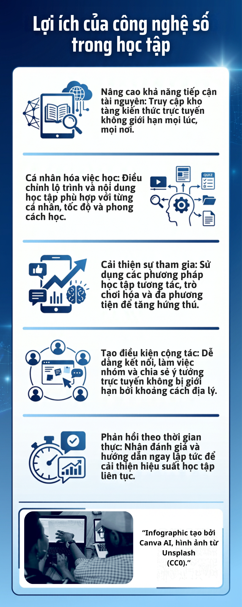

Infographic
Infographic giới thiệu những cách công nghệ số hỗ trợ việc học tập hiệu quả hơn.

Video YouTube
Video được nhúng trực tiếp từ YouTube để người xem có thể theo dõi ngay trên trang.
Khám phá những lợi ích của công nghệ số qua infographic và video YouTube.
Infographic giới thiệu những cách công nghệ số hỗ trợ việc học tập hiệu quả hơn.

Video được nhúng trực tiếp từ YouTube để người xem có thể theo dõi ngay trên trang.